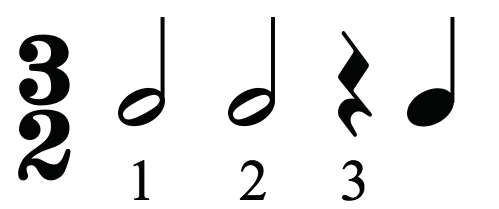
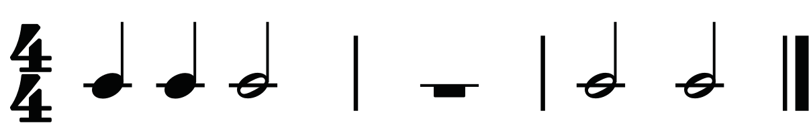
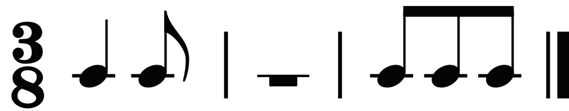
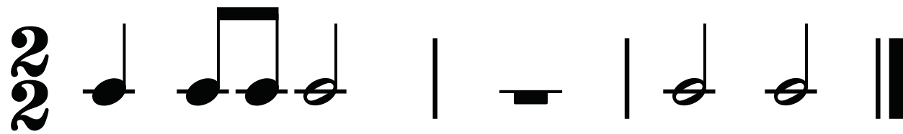
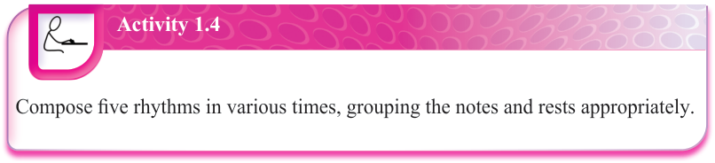
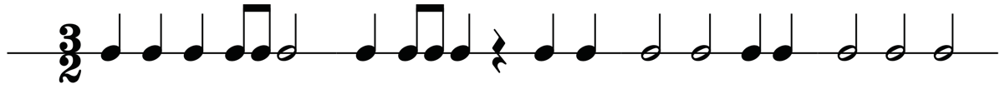
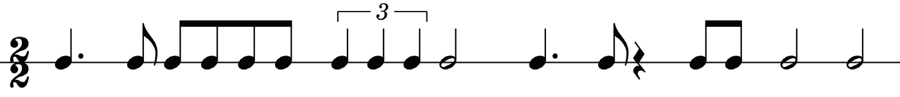
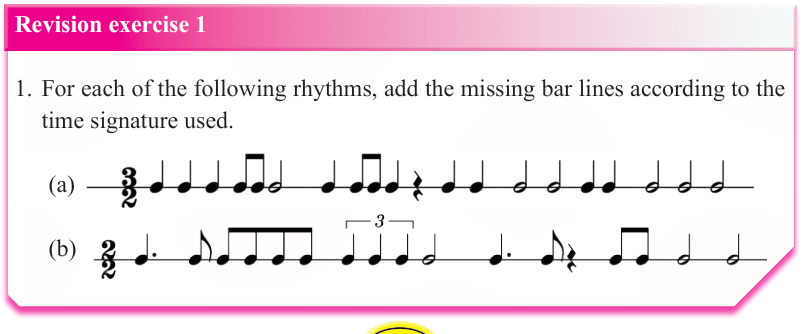

Incorrect

CorrectFigure 1.51: Incorrect and correct use of rests to represent a beat in three-two time
(d) A semibreve rest should be used to represent a whole bar. When there is silence for a whole bar, a semibreve rest is usually used to represent all the beats in a particular bar. Figures 1.52, 1.53 and 1.54 show a whole bar rest in different times.

Figure 1.52: A whole bar rest in four-four time

Figure 1.53: A whole bar rest in three-eight time

Figure 1.54: A whole bar rest in two-two time
Activity 1.4
Compose five rhythms in various times, grouping the notes and rests appropriately.

Revision exercise 1
1.For each of the following rhythms, add the missing bar lines according to the time signature used.
(a)Add the missing bar lines in the following rhythm.

(b)Add the missing bar lines in the following rhythm.

